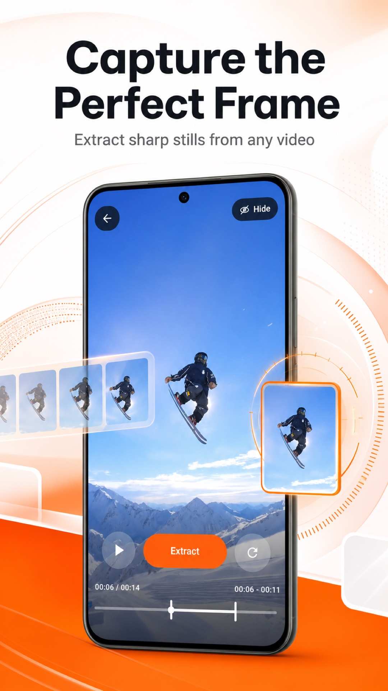
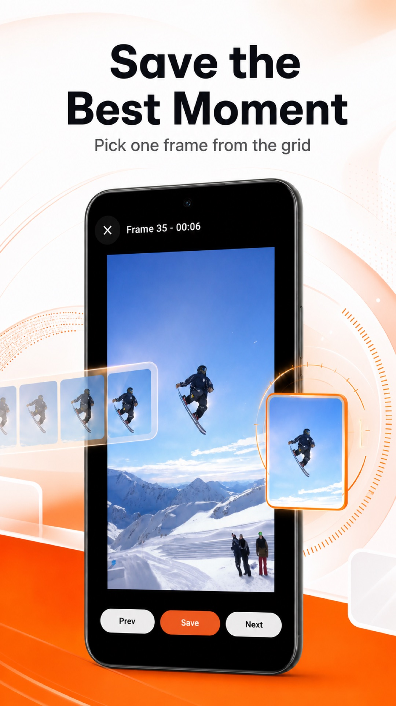

Come salvare una foto da un video
Il percorso più semplice da un filmato a un’immagine fissa da conservare.
Leggi la guida →Da video a foto, un fotogramma alla volta
Scegli un video dal telefono, trova il fotogramma esatto e salvalo come immagine. Per il flusso principale non servono account o caricamenti.
Download gratuito. Gli annunci e l’accesso Pro opzionale sono descritti nelle rispettive pagine dello store.

Come funziona
Il video selezionato e i fotogrammi estratti vengono elaborati sul dispositivo.
Apri un filmato dalla libreria foto o dalla galleria.
Seleziona l’intervallo, estrai i fotogrammi e confrontali nella griglia o a schermo intero.
Salva l’immagine preferita sul dispositivo oppure apri il menu di condivisione.

Confronta i fotogrammi estratti, aprine uno a schermo intero, ingrandiscilo e passa ai momenti vicini. È utile per sport, animali, tutorial e registrazioni in cui ogni istante conta.
Leggi la guida →Guide
Il percorso più semplice da un filmato a un’immagine fissa da conservare.
Leggi la guida →